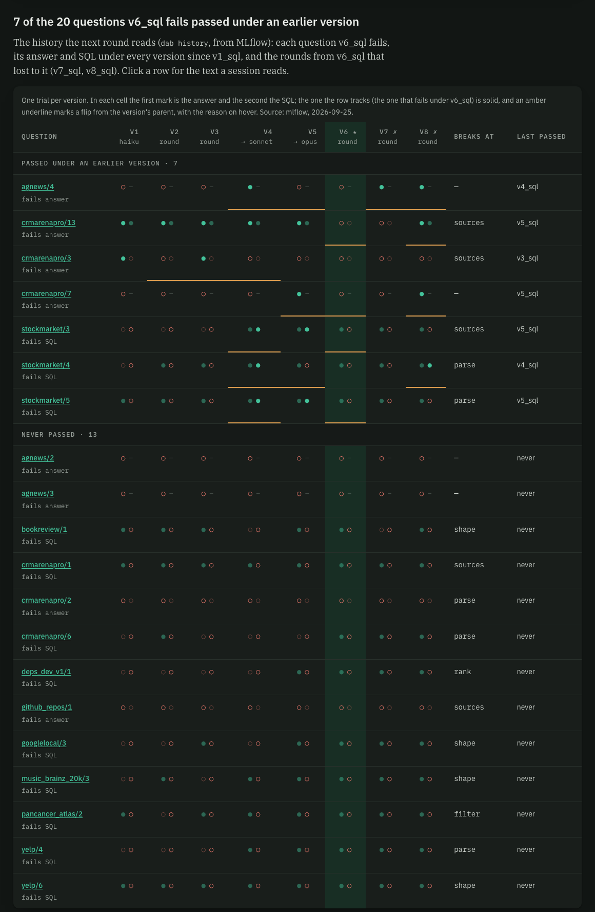

DataAgentBench · receipt s14 · 2026-09-25 · plan s13 · runs v6 20260925T015204Z, v7 040220Z, v8 061041Z · one trial each · branch challenger_v8 · updated: v8 promoted under D46
Round 5 was v7's recipe with one change. Every session also read each failed question's history across v1–v7, plus v7's lost round: what it wrote, what was refused, and what it gained and lost. The history was read from MLflow, as asked. v8 improves on v6 in answers and in the leaderboard's Pass@1, and loses two SQL passes. Two of the four statements it lost had passed under v6 because of v6 notes that the reviewer (G1) refuses as handing over the answer; v8 left those notes out.
01 · the receipt · every item queued from s13
| id | item | outcome | evidence |
|---|---|---|---|
| B1 | champion lock | done | dab optimise --into v8_sql picked v6's run itself; a run of another version raises NotChampionError (test). dab crossfit passes its own run and reads no history. |
| B2 | round outcomes on MLflow | done | Backfilled v2 won, v3 lost, v6 won, v7 lost. dab promote then wrote v8 lost under D36, and won under D46. Each round's MLflow run carries outcome and outcome.json. |
| B3 | session traces | done | 52 backfilled (rounds 1–4: 11, 16, 12, 13) and 13 logged by round 5; kind=optimise_session, a span per turn and tool call. |
| B4 | dab history | done | Built from MLflow in about 7 s. --parity: MLflow = folders. Fixed on the way: MLflow artifact downloads hung (worked around in the client, §06), and MLflow held v2's pre-re-run optimise.json (re-logged). |
| B5 | briefings | done | Each failed question's history block and v7's block for the same dataset or step. The optimiser's two prompts each gained one paragraph. optimise.json records history. |
| B6 | tests and docs | done | tests/test_s13.py (9) and one API test. pytest, ruff, mypy, tsc, vitest (51) and the design lint all pass. CLAUDE.md (the MLflow exception, the lock) and AGENTS.md §7. |
| B7 | round 5 → v8_sql | done | $4.83, of which the reviewer took $1.29. Accepted: 3 of 3 sections and 6 of 10 dataset notes. |
| B8 | v8 on the 54, once | done | $5.36; the Opus reader $1.29. No errors, timeouts or rate limits. |
| B9 | promote v8 against v6 | done · v8 promoted | D36 kept v6 on SQL, 33/49 against 31/49. You then set D46: a challenger passes the leak gate (its round ran G1–G4, and G2 finds no gold value in its prompt), then the highest Pass@1 wins. v8 passes the gate and wins, 0.904 to 0.891. Prompt version 11 holds the champion alias. v2–v5 are barred by the gate. v8 still carries 7 of the 10 v6 units the s12 G1 audit judged decisive; none of them is a gold value. |
| B10 | this receipt | done | — |
| M1 | question history on the Optimise tab | done | /api/optimise/history and the matrix below; each cell links to its trial, and a row opens the text a session reads. |
02 · the three versions from v6's run · one trial each
| version | answers | SQL | decision | Pass@1 | held-out answers | made by |
|---|---|---|---|---|---|---|
| v6_sql ★ | 46/54 | 33/49 | 49/49 | 0.891 | 14/16 | round 3, training split, literal guard, $1.90 |
| v7_sql ✗ | 46/54 | 30/49 | 49/49 | 0.884 | 13/16 | round 4, every error + G1–G4, $4.39 |
| v8_sql ✗ | 48/54 | 31/49 | 48/49 | 0.904 | 14/16 | round 5 = round 4 + the history, $4.83 |
Paired exact McNemar tests, v6 against v8: answers +3 −1 (p = 0.63), SQL +2 −4 (p = 0.69). Held-out = the 16 questions of the old s06 split, kept only for comparison: rounds 4 and 5 read every error.
03 · every question that moved, v6 → v8
| question | move | under v8 | what the record shows |
|---|---|---|---|
| crmarenapro/13 | answer + SQL gained | passes | Passed v1–v5, failed under v6 and v7 at sources. Round 5 read its history and v5's statement. Its crmarenapro notes were dropped (G1); v8 changed the sources, parse and shape sections. |
| crmarenapro/7 | answer gained | passes | No golden. Passed only under v5 before, a model switch with no prompt change: with one trial, this may be noise. |
| agnews/4 | answer gained | passes | No golden. Passed under v4 and v7. v8's agnews notes changed. |
| stockmarket/4 | SQL gained | passes | Last passed under v4. v8's stockmarket notes changed. |
| googlelocal/2 | answer lost | SQL passes | The statement returns the right result; the validator rejects the answer's format. |
| deps_dev_v1/2 | SQL lost | breaks at metric | v6's deps_dev_v1 notes say to return a Version column for such rankings, and that returning only project names "counts as wrong". G1 refused that rule as decisive in rounds 4 and 5; v8 left it out. v7 lost this too. |
| stockmarket/2 | SQL lost | breaks at shape | v6's stockmarket notes give the list-plus-total format with a final "Total" row. G1 refused it in round 4, and v8's rationale says it removed "refused … list+total rules". |
| crmarenapro/4 | SQL lost | breaks at shape | Labels a month with its year. Round 5 rewrote the shape section, as round 4 did, and v7 broke this at shape too. |
| stockindex/1 | SQL lost | breaks at rank | No round touched the rank section or stockindex's notes, and v7 lost it too: noise or a side effect of shared text. |
Two of v6's 33 SQL passes (deps_dev_v1/2, stockmarket/2) rest on notes the reviewer judges to hand over the answer (the rubric's §2.2). Set those two aside and v6 and v8 stand level at 31 of 49. Only a run of v6 without that text (N3 below) would make the comparison like for like.
04 · the seven regressions the history pointed at
| question | tracks | last passed | v6 | v7 | v8 |
|---|---|---|---|---|---|
| crmarenapro/13 | answer | v5 | fail | fail | pass |
| crmarenapro/7 | answer | v5 | fail | fail | pass |
| agnews/4 | answer | v4 | fail | pass | pass |
| stockmarket/4 | SQL | v4 | fail | fail | pass |
| crmarenapro/3 | answer | v3 | fail | fail | fail |
| stockmarket/3 | SQL | v5 | fail | fail | fail |
| stockmarket/5 | SQL | v5 | fail | fail | fail |

05 · round 4 against round 5 · the same recipe, one reading the history
| round 4 → v7 | round 5 → v8 | |
|---|---|---|
| read | every error of v6's run | the same, plus the history and v7's round |
| sections accepted | 3 of 3 (sources, parse, shape) | 3 of 3 (sources, parse, shape) |
| dataset notes accepted | 2 of 10 | 6 of 10 |
| G1 reviews decisive | 15 of 20 | 13 of 22 |
| cost (of which G1) | $4.39 ($1.16) | $4.83 ($1.29) |
| SQL lost against v6 | crmarenapro/4, deps_dev_v1/2, stockindex/1 | the same three, and stockmarket/2 |
Four of round 5's 13 rationales name the earlier rounds: the sources and shape sections, agnews and yelp. The stockmarket session dropped the rules round 4's reviewer had refused, the list-plus-total rule among them. Both rounds added the same shape rule (output numbers as computed, no rounding). The four questions it came from (bookreview/1, googlelocal/3, music_brainz_20k/3, yelp/6) still fail SQL under v8, and crmarenapro/4 broke at shape under both rounds.
06 · what MLflow holds now · experiment dataagentbench/evals
outcome: v2 won, v3 lost, v6 won, v7 lost, v8 lost. A round 6 from v6 reads both v7 and v8 as rounds that lost.MlflowSource sets MLFLOW_ENABLE_PROXY_MULTIPART_DOWNLOAD=false for its own process. The real fix belongs in nmp-central-ai; I did not change it.07 · next · your call, nothing queued
Correction to s13: its KPI said 8 of 12 of v7's dataset sessions ended with nothing accepted. v7's round had 10 dataset sessions, so it is 8 of 10. The s13 page is fixed.